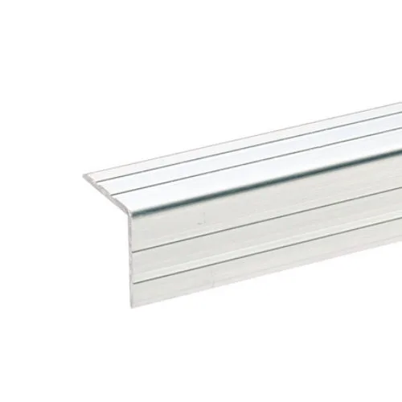
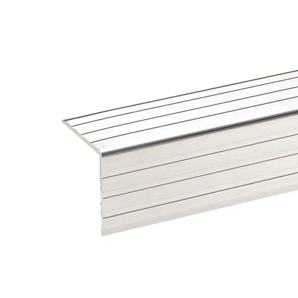
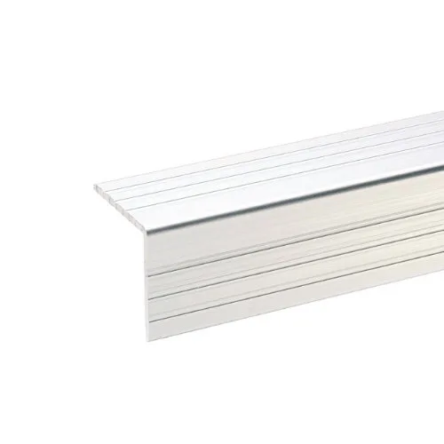
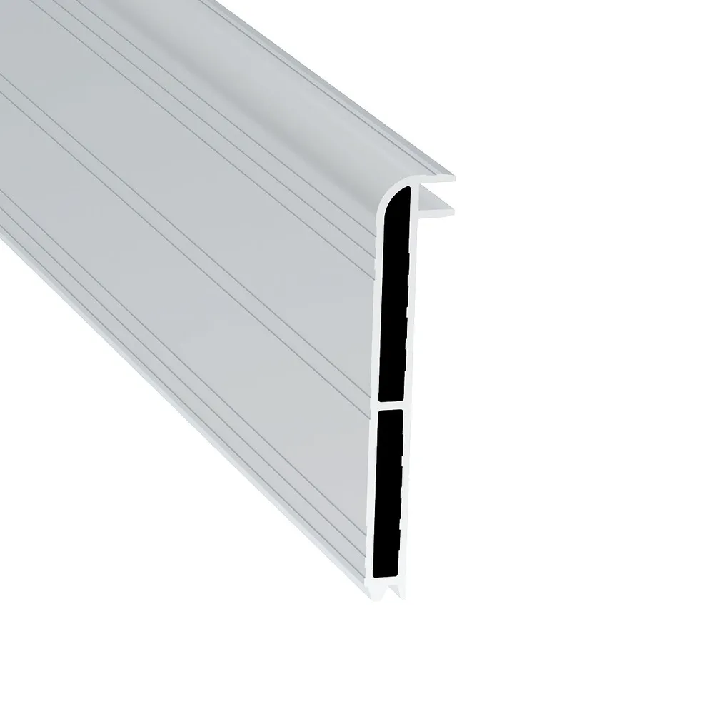
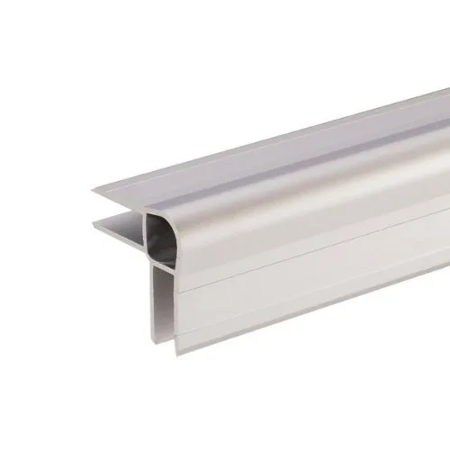

Ablage der Kantenschutzprofile – interne Seite, nicht veröffentlicht.

Verwendet bei: Standard Protect Flightcase

Verwendet bei: Standard Protect Flightcase Light, Plus Protect Flightcase

Verwendet bei: Plus Protect Light, Ultra Protect (alle Varianten)

Verwendet bei: N-Case

Verwendet bei: Easy-Case, Easy-Case Light